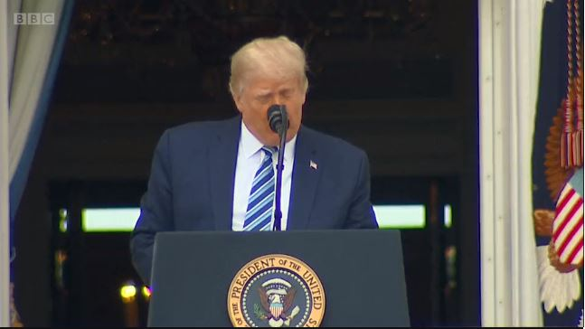
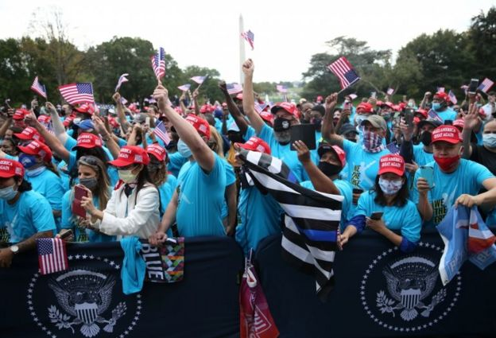

10 minutes ago
Donald Trump took off his mask as he prepared to address his supporters on the lawn below
Donald Trump has delivered a speech in front of cheering supporters at the White House in his first public appearance since being hospitalised.
The event was officially a "peaceful protest", but looked, critics said, much like a Trump campaign rally.
The president, who says he is no longer taking medicines against Covid-19, told the crowd he was "feeling great".
The White House has not provided an update on the president's health since Thursday.
It is unclear whether the president remains contagious following his three-day hospital stay with Covid-19.
Joe Biden's campaign said the Democratic candidate had tested negative for the coronavirus on Saturday, ahead of a planned campaign trip to Pennsylvania.
Polling suggests Mr Biden has a single-digit lead over Mr Trump and an ABC News/Ipsos poll found that just 35% of Americans approved of how Mr Trump has handled the coronavirus crisis.
More than 210,000 Americans are known to have died of Covid-19.
Saturday's White House gathering was partly organised by a foundation called "Blexit", which aims to get black and Latino voters to support the Republican party.
The president, who was not wearing a mask, railed against Mr Biden, describing the Democrat's programme as "beyond socialism - Communist, that's about right". Mr Biden is generally considered to be a moderate Democrat.
Mr Trump repeated his previous assertion that he had done more for the black community than any president since Abraham Lincoln - a claim the BBC has previously fact-checked.
While most in the crowd were wearing masks there appeared to be little social distancing.
The White House has stressed that this was not a campaign event, says the BBC's Lebo Diseko in Washington. But, she points out, attendees wore caps with his trademark phrase "Make America Great Again", and the president touched on many of his key talking points, like the economy, the border wall and postal voting.
The president also claimed, falsely, that his planned wall along the 2,000-mile border with Mexico would soon be finished.
Questions over safety were raised after a gathering to unveil Mr Trump's nominee to the Supreme Court resulted in at least 11 people subsequently testing positive for Covid-19 - including the president. Top US infectious disease expert Dr Anthony Fauci described it as "a super-spreader event".
Senior Democratic Congressman Adam Schiff said it was "morally bankrupt" for the president to hold "another super-spreader rally" at the White House.
The White House said in advance of Saturday's event that those attending would be required to undergo a temperature check and wear face masks, and encouraged to practice social distancing.
However, images from the event showed several hundred people packed closely together.
The president's campaign team has also said he is planning to attend a "big rally" in Florida - a battleground state in next month's presidential election - on Monday, followed by trips to Pennsylvania and Iowa.
Mr Biden expressed disbelief at the president's plans to hold rallies and criticised the Trump administration's lax stance on mask use as reckless.
"I wouldn't show up unless you have a mask and can distance," Mr Biden said, speaking while campaigning in Las Vegas on Friday.
Joe Biden has left Delaware to campaign in Pennsylvania
While Mr Biden appears ahead in national polling, US presidential elections are in practice determined in key states where both candidates stand a chance of winning, rather than by the total number of votes won - as Hillary Clinton found to her cost in 2016.
As part of his strategy to woo disaffected Democratic voters, Mr Biden has been campaigning in the parts of the country that powered President Trump's election victory in 2016.
In that spirit, Mr Biden is heading to Erie County, Pennsylvania, on Saturday.
After flipping from Democrat to Republican in 2016, Erie is seen as one of the most important swing counties in one of the most important swing states.
The candidate is expected to speak to business owners and entrepreneurs about the country's economic recovery from the coronavirus crisis.
Unlike Mr Trump, Mr Biden will not hold any public events.
"Unfortunately, because of Covid precautions and local guidance on group gatherings, there will be no public events with the Biden campaign," Jim Wertz, chairman of the Erie County Democratic Party, wrote in an email to local Democrats.
Mr Trump told Fox News that he was feeling "really, really strong" and was no longer on medication, having had his "final doses of just about everything".
On Thursday the president's doctor Sean Conley said that it would be safe for him to return to public engagements on Saturday [10 October] as that would mark "day 10" since his diagnosis on Thursday 1 October.
Following his diagnosis, Mr Trump spent three nights in hospital and was treated with the steroid dexamethasone, the antiviral drug remdesivir and a cocktail of manufactured antibodies made by the company Regeneron.
The CDC recommends self-isolation for at least 10 days after coronavirus symptoms first appear, with more severe illness, such as that requiring hospital treatment, potentially needing up to 20 days.